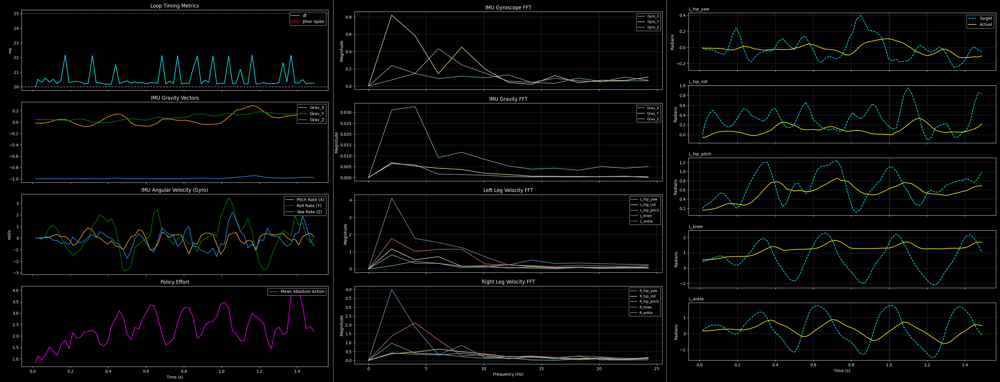

Sim-to-Real Development Timeline
Transferring a policy from a pristine simulation environment to a custom-built, 25kg physical platform is an iterative process of identifying and bridging reality gaps. What follows is the chronological debugging sequence required to achieve stable stationary walking.
Initial Inference & History Shock
The very first attempt to run inference on the physical robot resulted in immediate, violent flailing. This was traced back to an issue with the observation history buffer during the warmup phase. The policy was being fed a continuous stream of intended actions while the robot was physically locked in a limp crouch. By the time inference actually began, the neural network believed it had been commanding movement for five seconds without any physical response—creating a massive, sudden overcompensation akin to integral windup. Implementing an explicit `update_history_only` warmup method, which populated the position sensors but kept the action buffer at true zero, stabilized the initial startup.
Addressing Twitchy Behaviors & High-Frequency Noise
Once the robot could start safely, its walking gait was incredibly rapid, frantic, and twitchy compared to the smooth motion seen in Isaac Lab. To damp this behavior, a low-pass Exponential Moving Average (EMA) filter was simultaneously added to both the training environment and the physical `BipedBrain` inference loop. Additionally, the penalty for action rates in the RL reward structure was significantly increased, forcing the network to prioritize smoother, slower transitions between commands.
Sensor Noise & The Forward Bias
While the smoothing helped reduce the frantic stepping, the biped still acted erratically and exhibited a strong, unintended forward bias—marching forward aggressively when it was commanded to march in place. Assuming the network was over-trusting perfect simulator telemetry, aggressive uniform noise was injected into the training observations. This successfully calmed the erratic behavior, but the forward drift persisted. Realizing the physical Center of Mass (CoM) of the torso likely didn't perfectly match the CAD URDF, extensive Domain Randomization was added to the training pipeline, randomly shifting mass distribution and center-of-mass coordinates. This successfully trained the policy to dynamically correct its balance, eliminating the forward bias.
Command Latency & Final Stabilization
Despite walking in place without drifting, the steps were still too fast and the robot struggled to hold its own weight confidently during the swing phase. This pointed to a classic latency gap: the neural network was issuing commands and expecting instant physical torque, leading to thrashing when the physical hardware inevitably lagged behind. To bridge this, a dynamic delay was implemented in the training environment. Observations were slightly delayed, and significant randomized latency (up to 3 control steps, or 60ms) was applied to the action outputs.
⚠️ DISCLAIMER: This project is currently ongoing and the final result has not yet been reached.
Deployment Software Stack
To execute the trained policy safely on heavy hardware, a robust, multi-threaded Python architecture was developed. The stack relies on asynchronous I/O and strict memory isolation to sustain a continuous 50Hz control loop without blocking sensor reads or dropping neural network frames.
biped_core.py (Middleware & Inference)
This is the foundational middleware of the system. It contains the BipedBrain class,
which leverages the onnxruntime library (optimized specifically for sequential
single-core CPU execution to minimize context-switching overhead) to handle neural network
inference, history buffer management, and EMA action smoothing. Furthermore, this script houses the
core classes for hardware interaction:
- IMUNode (Multiprocessing): Reading I2C/UART sensors in Python inherently suffers from Global Interpreter Lock (GIL) stutter. The IMU node elegantly bypasses this by spawning an isolated, high-priority background process. This engine continuously polls the BNO085 and streams the orientation and gravity vectors into shared C-type memory arrays, allowing the main control loop to read zero-latency state data instantly.
- ActuatorNode (Safety Firewalls): This class manages the asynchronous USB transactions to the STM32 drivers. Crucially, it acts as a dynamic software firewall. It enforces strict "Virtual Wall" positional limits, automatically clipping commands if the network attempts to break a physical joint boundary. It also runs a continuous mathematical thermal estimator, calculating resistive phase loss (I²R) based on real-time torque, ensuring the custom actuators do not melt their PETG housings during extended operation.
class IMUNode:
def __init__(self, calibration_file="biped_calibration.json"):
# Shared memory arrays (C-type doubles) for Cross-Process communication
self._omega = multiprocessing.Array("d", 3)
self._gravity = multiprocessing.Array("d", 3)
self._theta = multiprocessing.Array("d", 3)
self._is_connected = multiprocessing.Value("b", False)
self._gravity[:] = [0.0, 0.0, -1.0]
# --- Load Calibration Offsets ---
offset_tx = 0.0
offset_ty = 0.0
offset_tz = 0.0
try:
with open(calibration_file, "r") as f:
calib = json.load(f)
imu_offsets = calib.get("imu_offsets_radians", {})
offset_tx = imu_offsets.get("theta_x", 0.0)
offset_ty = imu_offsets.get("theta_y", 0.0)
offset_tz = imu_offsets.get("theta_z", 0.0)
print(
f"[IMU] Loaded Calibration Offsets (rad) - X:{offset_tx}, Y:{offset_ty}, Z:{offset_tz}"
)
except FileNotFoundError:
print(
f"[IMU] WARNING: {calibration_file} not found. Defaulting IMU offsets to 0.0"
)
# Start the fully isolated hardware process
self.process = multiprocessing.Process(
target=self._hardware_process,
args=(
self._omega,
self._gravity,
self._theta,
self._is_connected,
offset_tx,
offset_ty,
offset_tz,
),
daemon=True,
)
self.process.start()
print("[IMU] Waiting for isolated multi-processing hardware engine to boot...")
start_wait = time.time()
while not self._is_connected.value and time.time() - start_wait < 5.0:
time.sleep(0.1)
if not self._is_connected.value:
print("[FATAL] IMU Process failed to connect to BNO085.")
else:
print("[+] IMU Multi-Processing Engine Active. Python GIL bypassed.")
# Using @property decorators so march_in_place.py can access these exactly like normal lists
@property
def is_connected(self):
return self._is_connected.value
@property
def omega(self):
return list(self._omega)
@property
def projected_gravity(self):
return list(self._gravity)
@property
def theta(self):
return list(self._theta)
@staticmethod
def _hardware_process(shared_omega, shared_gravity, shared_theta, is_connected, off_tx, off_ty, off_tz):
# 1. Demand high priority from the Linux CPU Scheduler
import os
try:
os.nice(-10) # Negative numbers equal higher priority in Linux
except PermissionError:
pass # Fails gracefully if script isn't run with sudo
# Imports MUST be inside the process so they bind to the new memory space
from adafruit_extended_bus import ExtendedI2C as I2C
from adafruit_bno08x.i2c import BNO08X_I2C
from adafruit_bno08x import BNO_REPORT_GYROSCOPE, BNO_REPORT_GAME_ROTATION_VECTOR
import time
import math
# ... [rest of the hardware loop]
try:
i2c = I2C(3)
bno = BNO08X_I2C(i2c, address=0x4A)
features_enabled = False
for _ in range(5):
try:
bno.enable_feature(BNO_REPORT_GYROSCOPE, report_interval=2500)
bno.enable_feature(
BNO_REPORT_GAME_ROTATION_VECTOR, report_interval=2500
)
features_enabled = True
break
except RuntimeError:
time.sleep(0.5)
if not features_enabled:
return # Exits the process cleanly, is_connected stays False
is_connected.value = True
while True:
try:
ox, oy, oz = bno.gyro
qx, qy, qz, qw = bno.game_quaternion
shared_omega[:] = [ox, oy, oz]
# Math
sinx_cosy = 2.0 * (qw * qx + qy * qz)
cosx_cosy = 1.0 - 2.0 * (qx * qx + qy * qy)
raw_tx = math.atan2(sinx_cosy, cosx_cosy)
siny = 2.0 * (qw * qy - qz * qx)
if abs(siny) >= 1:
raw_ty = math.copysign(math.pi / 2.0, siny)
else:
raw_ty = math.asin(siny)
sinz_cosy = 2.0 * (qw * qz + qx * qy)
cosz_cosy = 1.0 - 2.0 * (qy * qy + qz * qz)
raw_tz = math.atan2(sinz_cosy, cosz_cosy)
tx = raw_tx - off_tx
ty = raw_ty - off_ty
tz = raw_tz - off_tz
shared_theta[:] = [tx, ty, tz]
gx = math.sin(ty)
gy = -math.sin(tx) * math.cos(ty)
gz = -math.cos(tx) * math.cos(ty)
shared_gravity[:] = [gx, gy, gz]
except Exception:
pass
#time.sleep(0.001)
except Exception:
pass
def stop(self):
if hasattr(self, "process"):
self.process.terminate()
self.process.join()class ActuatorNode:
def __init__(self, joint_name, port, hw_offset, math_offset):
self.joint_name = joint_name
self.total_offset_rad = hw_offset + math_offset
self.pos_min, self.pos_max = ACTUATOR_LIMITS[self.joint_name]
self.last_q_des = None
self.last_cmd_time = None
self.last_kp = None
self.ser = serial.Serial(port, BAUD_RATE, timeout=0.01)
self.ser.reset_input_buffer()
self.ser.reset_output_buffer()
self.q_curr = None
self.dq_curr = 0.0
# --- THERMAL ESTIMATOR CONFIGURATION ---
self.temperature = 25.0
self.t_ambient = 25.0
self.thermal_trip_limit = 100.0
if "hip_roll" in self.joint_name or "hip_yaw" in self.joint_name:
self.Kt, self.R_phase, self.C_th, self.gear_ratio = 0.205, 1.2, 135.0, 20.0
else:
self.Kt, self.R_phase, self.C_th, self.gear_ratio = 0.178, 0.45, 189.0, 16.0
self.tau_th = 400.0
async def verify_firmware(self):
try:
self.ser.reset_input_buffer()
cmd_bytes = struct.pack(" 0:
state_data = self.ser.read(bytes_waiting)
if len(state_data) % 16 == 0 and len(state_data) % 12 != 0:
return False
return True
return False
except Exception:
return False
async def transact(self, q_des, kp, kd):
"""Standard 12-byte fast operation loop with Virtual Wall Soft Limits."""
# 1. Dynamic Virtual Wall (Conditional Soft Limit)
safe_q_des = q_des
if self.q_curr is not None:
if self.q_curr < self.pos_min:
# Physically breached minimum. Only allow commands that push it back in.
safe_q_des = max(self.pos_min, q_des)
elif self.q_curr > self.pos_max:
# Physically breached maximum. Only allow commands that push it back in.
safe_q_des = min(self.pos_max, q_des)
# 2. Timing & State
curr_time = time.perf_counter()
dt = 0.0 if self.last_cmd_time is None else curr_time - self.last_cmd_time
self.last_q_des = safe_q_des
self.last_kp = kp
self.last_cmd_time = curr_time
# 3. USB Transaction
try:
raw_q_des = safe_q_des + self.total_offset_rad
cmd_bytes = struct.pack("= 12:
state_data = self.ser.read(self.ser.in_waiting)
q, dq, tau_actuator = struct.unpack(" 0.001:
heating_rate = p_loss / self.C_th
cooling_rate = (self.temperature - self.t_ambient) / self.tau_th
self.temperature += (heating_rate - cooling_rate) * dt
if self.temperature > self.thermal_trip_limit:
print(
f"\n[THERMAL FAULT] {self.joint_name} over {self.thermal_trip_limit}C! (Est: {self.temperature:.1f}C)"
)
return False
return True
return False
except Exception:
return False march_in_place.py (Execution State Machine)
This is the primary asynchronous execution script. It utilizes asyncio.gather to
concurrently dispatch serial commands to all ten nodes and follows a strict, safe progression to
bring the robot online. It begins in a limp mode, executes pre-flight checks (verifying IMU upright
orientation and zero initial velocity), gracefully interpolates the gains to ramp the robot into a
crouch, and then runs a 5-second warmup loop to populate the neural network's history buffer without
commanding motion. Once operating in the main pipelined inference loop, it constantly evaluates the
robot's state against strict safety thresholds—such as triggering an immediate limp-mode abort if a
tip-over (Gravity Z > -0.2) or neural panic state (Mean Action > 4.3) is detected. All
high-frequency telemetry is simultaneously buffered and dumped to a CSV upon completion for
post-flight analysis.

Calibration & Diagnostic Utilities
A suite of secondary scripts was developed to support hardware deployment.
calibrate_biped.py automates the extraction of absolute physical zero-offsets and IMU
baseline deviations while the robot is suspended, saving them to a master JSON file. Furthermore,
specialized stress-testing tools like print_joint_angles.py and
imu_test.py are utilized to verify USB bandwidth headroom and Inter-Process
Communication (IPC) stability, ensuring the Pi can consistently meet the 20ms cycle budget before
the full neural network is engaged.